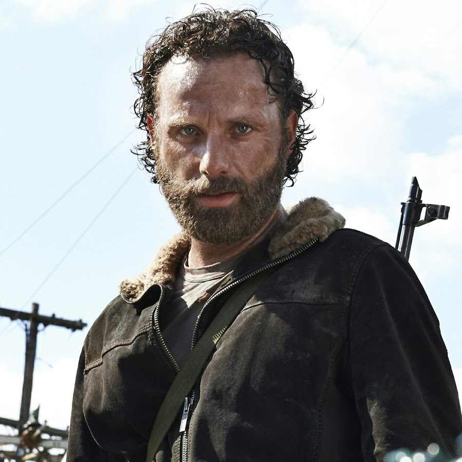
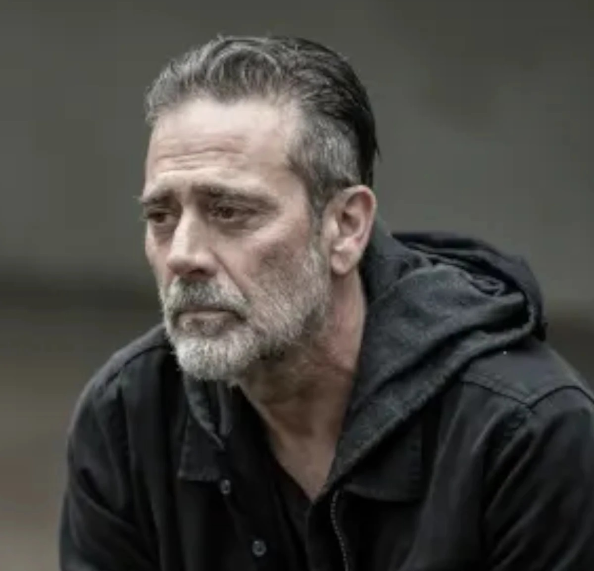
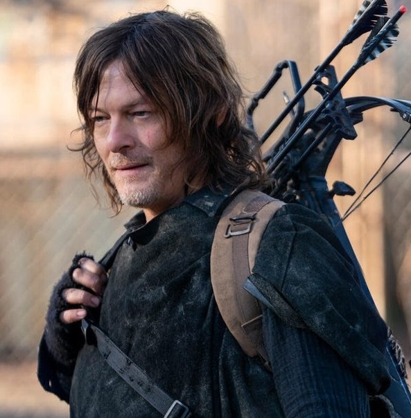
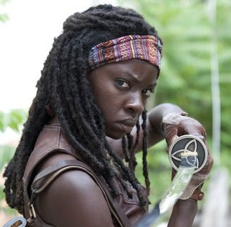
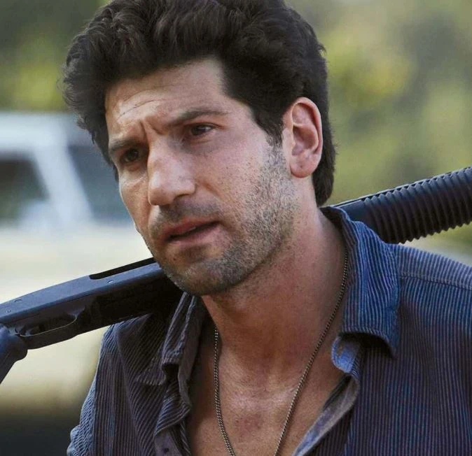
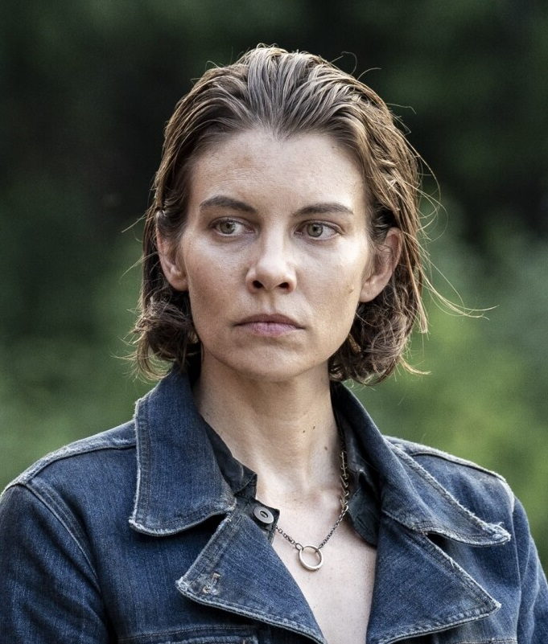
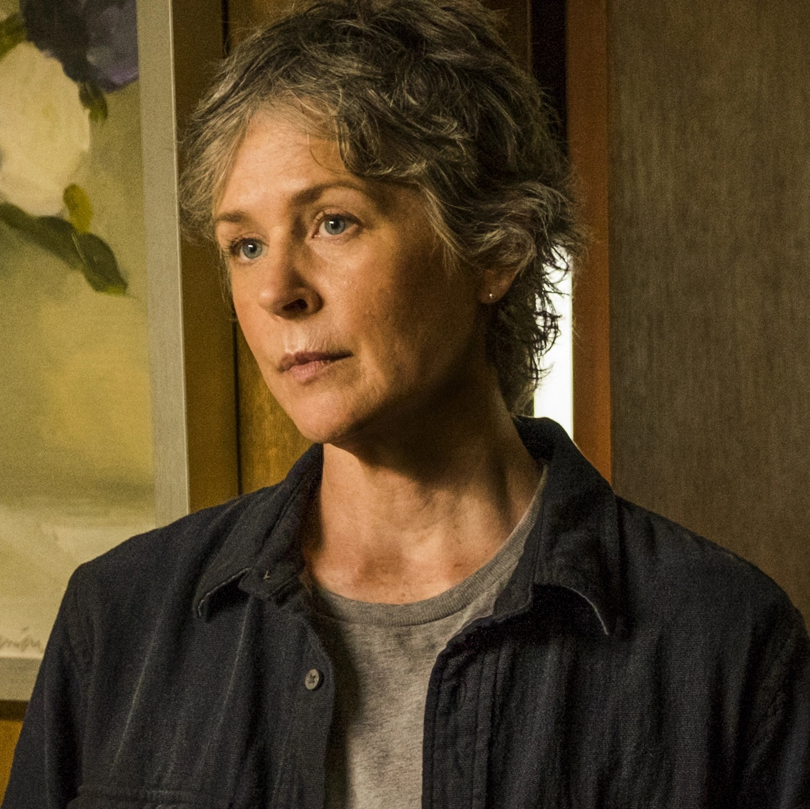
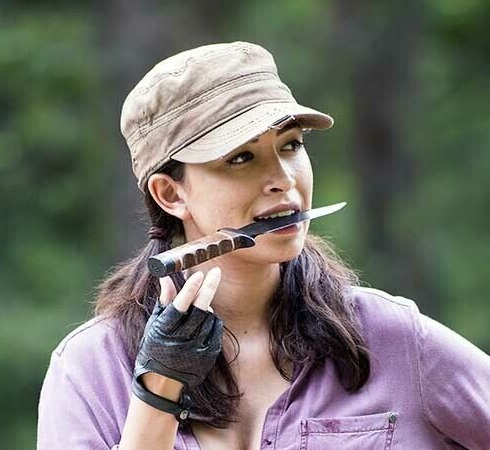
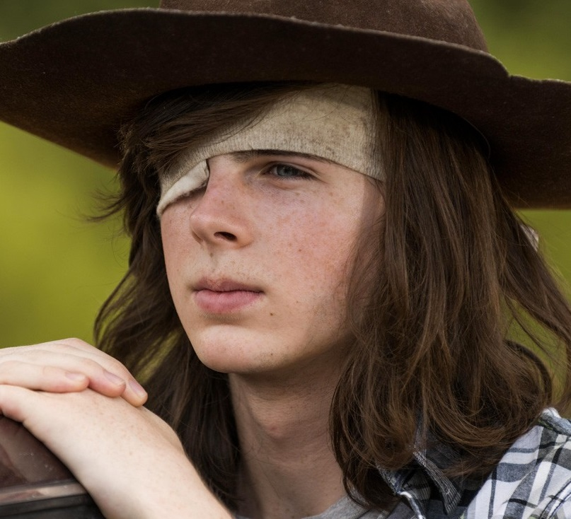

Personnages de The Walking Dead
Personnages principaux
-
Rick Grimes
 Protagoniste principal de la série, Rick Grimes est un ancien shérif adjoint qui dirige le groupe de survivants tout en luttant pour maintenir son humanité dans un monde post-apocalyptique infesté de zombies.
L'acteur est interprèter par Andrew Lincoln -
Negan Smith
 Negan est l'un des antagonistes les plus redoutés de "The Walking Dead". Il est le charismatique et impitoyable leader du groupe des Sauveurs. Il est connu pour son utilisation de "Lucille", une batte de baseball enveloppée de fil barbelé, pour punir ceux qui s'opposent à lui. Son style brutal et sa présence dominante en ont fait l'un des personnages les plus mémorables de la série.
L'acteur est interprèter par Jeffrey Dean Morgan -
Daryl Dixon
 Daryl Dixon est un chasseur habile et un survivant solitaire qui devient un atout essentiel pour le groupe de Rick, gagnant en popularité auprès des fans pour sa personnalité complexe et son sens de la loyauté.
L'acteur est interprèter par Norman Reedus -
Michonne
 Michonne est un personnage emblématique de "The Walking Dead". Son apparition initiale avec ses fidèles compagnons, son katana et ses animaux de compagnie zombies, a marqué les esprits des fans. Elle est une guerrière féroce et résiliente dotée d'une force et d'une intelligence remarquables. Son développement en tant que personnage complexe et sa relation avec d'autres survivants clés ont joué un rôle crucial dans l'intrigue de la série.
L'actrice est interprèter par Danai Gurira -
Shane Walsh
 Shane Walsh est l'un des premiers personnages présentés dans "The Walking Dead". Il est l'ancien partenaire et ami de Rick Grimes, mais leur relation devient tendue à mesure que l'histoire progresse. Shane est un personnage complexe dont les actions et les choix reflètent les dilemmes moraux et émotionnels auxquels sont confrontés les survivants dans un monde post-apocalyptique. Son rôle initial est crucial pour établir les thèmes de la série.
L'acteur est interprèterpar Jon Bernthal
Personnages secondaires
-
Maggie Rhee
 Maggie Rhee est un personnage clé de "The Walking Dead". Elle est initialement introduite comme la fille aînée de Hershel Greene et devient rapidement un membre important du groupe de survivants. Au fil de la série, elle fait preuve de force, de détermination et de leadership, devenant un pilier essentiel de la communauté. Son parcours personnel, marqué par des pertes déchirantes et des défis constants, la conduit à devenir une figure respectée et admirée de la série.
L'actrice est interprèter par Lauren Cohan -
Carol Peletier
 Carol Peletier est une survivante résiliente qui évolue considérablement au fil de la série, passant d'une mère au foyer timide à une figure de leadership forte et indépendante.
L'actrice est interprèter par Melissa Mcbride -
Rosita Espinosa
 Rosita Espinosa est un personnage clé de "The Walking Dead". Elle est introduite comme une survivante féroce et compétente, connue pour sa détermination et son habileté au combat. Son rôle évolue au fil de la série, montrant sa résilience et sa capacité à s'adapter à des situations difficiles. Rosita est respectée pour sa force et sa loyauté envers le groupe de survivants.
L'actrice est interprètér par Christian Serratos -
Glenn Rhee
Glenn Rhee est un membre clé du groupe de survivants, connu pour son intelligence et son ingéniosité, ainsi que pour sa relation avec Maggie Greene. Il est apprécié pour son humour et son dévouement envers le groupe.
L'acteur est interprèter par Steven Yeun -
Carl Grimes
 Carl Grimes est un personnage clé de "The Walking Dead". Il est le fils de Rick Grimes et joue un rôle crucial dans l'évolution de l'intrigue. Son passage de l'enfance à l'adolescence dans un monde post-apocalyptique met en lumière son courage, sa résilience et sa capacité à s'adapter aux réalités brutales de la vie. Son parcours personnel est marqué par des défis émotionnels et physiques qui façonnent sa personnalité et ses actions tout au long de la série.
L'acteur est interprèter par Chandler Riggs